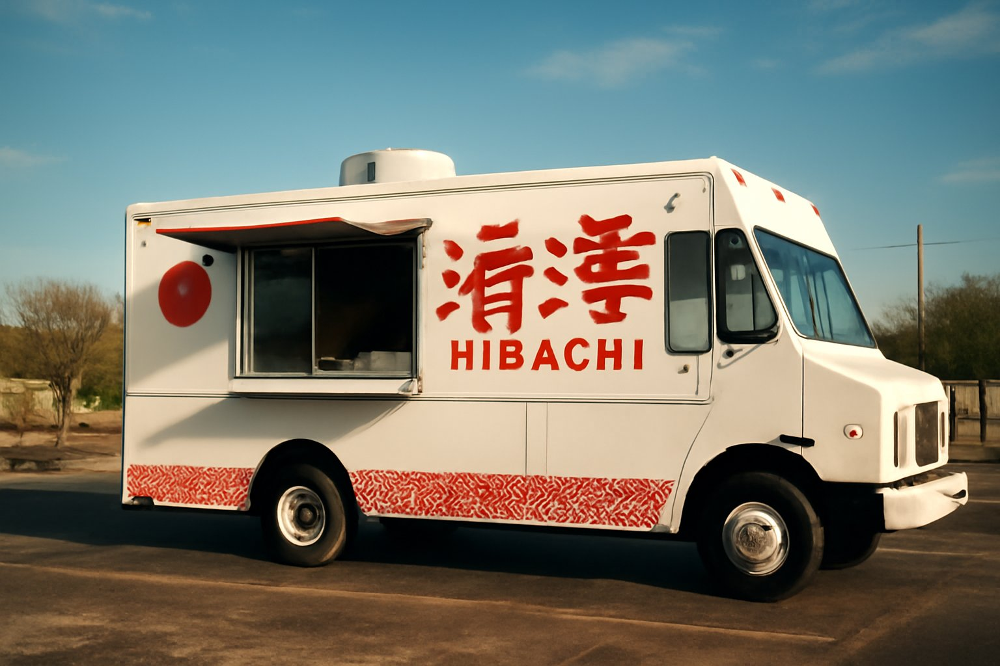

Our Story
Made to Order. Every Time.
Hibachi Master started with one idea: Prosper deserved Benihana-quality hibachi without the Benihana prices. Parked at 640 N Preston Rd next to the Texaco, this family-owned food truck has been serving the community fresh, made-to-order hibachi since it first opened.
Everything is prepared on the flat-top grill in front of you. No pre-cooked batches, no reheated rice. When you order, we cook. That's the promise — and it's why customers drive in from Frisco, McKinney, and beyond just for lunch.
The owners are on-site at every single service. You'll see them at the window, at the grill, making sure every plate is right. That's what makes Hibachi Master a neighborhood favorite rather than just another food truck.
